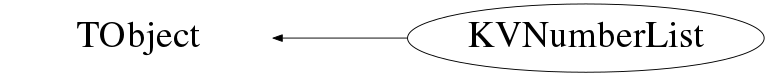

class KVNumberList: public TObject
KVNumberList Handles lists of positive numbers such as "1-12 14 15-17" or "345,356-390' Strings with this format are handled and analysed by this class. Examples: Create a new list with the constructor: KVNumberList a("1-20, 51, 52-56") Change an existing list: a.SetList("1001 1003-1005,1010") Get first and last values of ranges in list (i.e. largest and smallest included values) a.First() (would give 1001 for previous example) a.Last() (would give 1010 for previous example) Get an array filled with all values corresponding to ranges defined in list: Int_t n Int_t* val = a.GetArray(n) val[0] is same value as 'a.First()' val[n-1] is same value as 'a.Last() Use AsString() or GetList() method to obtain list in its most compact form, using the "1-20, 51, 52-56" format. IsEmpty() returns kTRUE if the list is empty ;-p Iterating over all numbers in the list: Initialise first by calling Begin(), then loop until End() returns kTRUE: KVNumberList r("1-10"); r.Begin(); while( !r.End() ){ Int_t next_val = r.Next(); } If list is empty, End() always returns kTRUE and Next() returns -1.
Function Members (Methods)
public:
| KVNumberList() | |
| KVNumberList(const KVNumberList&) | |
| KVNumberList(const Char_t*) | |
| KVNumberList(Int_t deb, Int_t fin, Int_t pas) | |
| virtual | ~KVNumberList() |
| void | TObject::AbstractMethod(const char* method) const |
| void | Add(Int_t) |
| void | Add(const Char_t*) |
| void | Add(const KVNumberList&) |
| void | Add(const IntArray&) |
| void | Add(Int_t, Int_t*) |
| virtual void | TObject::AppendPad(Option_t* option = "") |
| const Char_t* | AsString(Int_t maxchars = 0) const |
| Int_t | At(Int_t index) const |
| void | Begin() const |
| virtual void | TObject::Browse(TBrowser* b) |
| static TClass* | Class() |
| virtual const char* | TObject::ClassName() const |
| virtual void | Clear(Option_t* = "") |
| virtual TObject* | TObject::Clone(const char* newname = "") const |
| virtual Int_t | TObject::Compare(const TObject* obj) const |
| Bool_t | Contains(Int_t val) const |
| virtual void | Copy(TObject&) const |
| virtual void | TObject::Delete(Option_t* option = "")MENU |
| virtual Int_t | TObject::DistancetoPrimitive(Int_t px, Int_t py) |
| virtual void | TObject::Draw(Option_t* option = "") |
| virtual void | TObject::DrawClass() constMENU |
| virtual TObject* | TObject::DrawClone(Option_t* option = "") constMENU |
| virtual void | TObject::Dump() constMENU |
| Bool_t | End() const |
| virtual void | TObject::Error(const char* method, const char* msgfmt) const |
| virtual void | TObject::Execute(const char* method, const char* params, Int_t* error = 0) |
| virtual void | TObject::Execute(TMethod* method, TObjArray* params, Int_t* error = 0) |
| virtual void | TObject::ExecuteEvent(Int_t event, Int_t px, Int_t py) |
| virtual void | TObject::Fatal(const char* method, const char* msgfmt) const |
| virtual TObject* | TObject::FindObject(const char* name) const |
| virtual TObject* | TObject::FindObject(const TObject* obj) const |
| Int_t | First() const |
| IntArray | GetArray() const |
| KVNumberList | GetComplementaryList() const |
| virtual Option_t* | TObject::GetDrawOption() const |
| static Long_t | TObject::GetDtorOnly() |
| Int_t | GetEntries() const |
| const Char_t* | GetExpandedList() const |
| virtual const char* | TObject::GetIconName() const |
| const Char_t* | GetList() const |
| TString | GetLogical(const Char_t* observable) const |
| virtual const char* | GetName() const |
| Int_t | GetNValues() const |
| virtual char* | TObject::GetObjectInfo(Int_t px, Int_t py) const |
| static Bool_t | TObject::GetObjectStat() |
| virtual Option_t* | TObject::GetOption() const |
| KVNumberList | GetSubList(Int_t vinf, Int_t vsup) const |
| virtual const char* | TObject::GetTitle() const |
| virtual UInt_t | TObject::GetUniqueID() const |
| virtual Bool_t | TObject::HandleTimer(TTimer* timer) |
| virtual ULong_t | TObject::Hash() const |
| virtual void | TObject::Info(const char* method, const char* msgfmt) const |
| virtual Bool_t | TObject::InheritsFrom(const char* classname) const |
| virtual Bool_t | TObject::InheritsFrom(const TClass* cl) const |
| virtual void | TObject::Inspect() constMENU |
| void | Inter(const KVNumberList& list) |
| void | TObject::InvertBit(UInt_t f) |
| virtual TClass* | IsA() const |
| Bool_t | IsEmpty() const |
| virtual Bool_t | TObject::IsEqual(const TObject* obj) const |
| virtual Bool_t | TObject::IsFolder() const |
| Bool_t | IsFull(Int_t vinf = -1, Int_t vsup = -1) const |
| Bool_t | TObject::IsOnHeap() const |
| virtual Bool_t | TObject::IsSortable() const |
| Bool_t | TObject::IsZombie() const |
| Int_t | Last() const |
| virtual void | TObject::ls(Option_t* option = "") const |
| void | TObject::MayNotUse(const char* method) const |
| Int_t | Next() const |
| virtual Bool_t | TObject::Notify() |
| void | TObject::Obsolete(const char* method, const char* asOfVers, const char* removedFromVers) const |
| const char* | operator const char*() const |
| static void | TObject::operator delete(void* ptr) |
| static void | TObject::operator delete(void* ptr, void* vp) |
| static void | TObject::operator delete[](void* ptr) |
| static void | TObject::operator delete[](void* ptr, void* vp) |
| void* | TObject::operator new(size_t sz) |
| void* | TObject::operator new(size_t sz, void* vp) |
| void* | TObject::operator new[](size_t sz) |
| void* | TObject::operator new[](size_t sz, void* vp) |
| KVNumberList | operator+(const KVNumberList&) |
| KVNumberList | operator-(const KVNumberList&) |
| KVNumberList& | operator=(const KVNumberList&) |
| Int_t | operator[](Int_t index) const |
| virtual void | TObject::Paint(Option_t* option = "") |
| virtual void | TObject::Pop() |
| virtual void | Print(Option_t* = "") const |
| void | PrintLimits() const |
| virtual Int_t | TObject::Read(const char* name) |
| virtual void | TObject::RecursiveRemove(TObject* obj) |
| void | Remove(Int_t) |
| void | Remove(const Char_t*) |
| void | Remove(const KVNumberList&) |
| void | Remove(Int_t n, Int_t* arr) |
| void | TObject::ResetBit(UInt_t f) |
| virtual void | TObject::SaveAs(const char* filename = "", Option_t* option = "") constMENU |
| virtual void | TObject::SavePrimitive(ostream& out, Option_t* option = "") |
| void | Set(const TString& l) |
| void | Set(Int_t min, Int_t max, Int_t pas = 1) |
| void | TObject::SetBit(UInt_t f) |
| void | TObject::SetBit(UInt_t f, Bool_t set) |
| virtual void | TObject::SetDrawOption(Option_t* option = "")MENU |
| static void | TObject::SetDtorOnly(void* obj) |
| void | SetList(const TString&) |
| void | SetMinMax(Int_t min, Int_t max, Int_t pas = 1) |
| virtual void | SetName(const char* name) |
| static void | TObject::SetObjectStat(Bool_t stat) |
| virtual void | TObject::SetUniqueID(UInt_t uid) |
| virtual void | ShowMembers(TMemberInspector&) |
| virtual void | Streamer(TBuffer&) |
| void | StreamerNVirtual(TBuffer& ClassDef_StreamerNVirtual_b) |
| virtual void | TObject::SysError(const char* method, const char* msgfmt) const |
| Bool_t | TObject::TestBit(UInt_t f) const |
| Int_t | TObject::TestBits(UInt_t f) const |
| virtual void | TObject::UseCurrentStyle() |
| virtual void | TObject::Warning(const char* method, const char* msgfmt) const |
| virtual Int_t | TObject::Write(const char* name = 0, Int_t option = 0, Int_t bufsize = 0) |
| virtual Int_t | TObject::Write(const char* name = 0, Int_t option = 0, Int_t bufsize = 0) const |
protected:
| virtual void | TObject::DoError(int level, const char* location, const char* fmt, va_list va) const |
| void | TObject::MakeZombie() |
private:
| void | AddLimits(TString& string) const |
| void | AddLimits(Int_t min, Int_t max) const |
| void | clear() const |
| void | init_numberlist() |
| void | ParseAndFindLimits(const TString& string, const Char_t delim) const |
| void | ParseList() const |
Data Members
public:
| enum TObject::EStatusBits { | kCanDelete | |
| kMustCleanup | ||
| kObjInCanvas | ||
| kIsReferenced | ||
| kHasUUID | ||
| kCannotPick | ||
| kNoContextMenu | ||
| kInvalidObject | ||
| }; | ||
| enum TObject::[unnamed] { | kIsOnHeap | |
| kNotDeleted | ||
| kZombie | ||
| kBitMask | ||
| kSingleKey | ||
| kOverwrite | ||
| kWriteDelete | ||
| }; |
private:
| vector<int,allocator<int> >::iterator | fEndList | ! used by Next() & End() to iterate over list |
| Int_t | fFirstValue | smallest value included in list |
| Bool_t | fIsParsed | ! |
| vector<int,allocator<int> >::iterator | fIterIndex | ! used by Next() to iterate over list |
| Int_t | fLastValue | largest value included in list |
| TArrayI* | fLowerBounds | -> |
| Int_t | fMaxNLimits | size of arrays |
| Int_t | fNLimits | number of limits in arrays |
| Int_t | fNValues | total number of values included in ranges |
| TString | fName | name of the list |
| TString | fString | |
| TArrayI* | fUpperBounds | -> |
| IntArray | fValues | ! used by Next() to iterate over list |
Class Charts
{kind=link}
{kind=link}
{kind=link}
{kind=link}

Function documentation
KVNumberList(const Char_t* )
Initialise number list using string and parse it to fill limits arrays Any number will only appear once.
KVNumberList(Int_t deb, Int_t fin, Int_t pas)
Initialise number list using numbers from deb to fin with a step=pas i.e. deb,deb+pas,deb+2*pas,...,fin
void ParseList() const
PRIVATE METHOD Breaks string containing list down and fills limits arrays accordingly
void SetName(const char* name)
Change (i.e. set) the name of the KVNumberList. WARNING: if the object is a member of a THashTable or THashList container the container must be Rehash()'ed after SetName(). For example the list of objects in the current directory is a THashList.
void ParseAndFindLimits(const TString& string, const Char_t delim) const
Takes a string and breaks it up into its constituent parts, which were initially separated by white space or a comma. Any part which contains "-" will be sent to AddLimits().
void AddLimits(TString& string) const
'string' should contain something like "34-59" i.e. two integers separated by a '-'. these two numbers are taken for new lower and upper limits, fNLimits is increased by one, if necessary the arrays' size is increased.
void AddLimits(Int_t min, Int_t max) const
The numbers contained in the range [min,max] are added to the list.
void SetList(const TString& )
Analyse list contained in the string given as argument, use it to replace any previously defined list. New ranges are calculated automatically. Any number will only appear once.
Bool_t Contains(Int_t val) const
returns kTRUE if the value 'val' is contained in the ranges defined by the number list
IntArray GetArray() const
Creates and fills a sorted array with all the unique values compatible with the ranges defined in the list. (Sorting is in increasing order).
void Inter(const KVNumberList& list)
keep the AND logic operation result between 'list' and this list i.e. keep only numbers which appear in both lists
const Char_t * GetList() const
Get string containing list. This is most compact representation possible,
i.e. all continuous ranges are represented as "minval-maxval"
This string will become the new internal representation of the list.
Returns empty string if list is empty.
const Char_t * GetExpandedList() const
Get string containing list. Every unique value contained in the list will be represented. Returns empty string if list is empty.
TString GetLogical(const Char_t* observable) const
Get logical expression of 'this' list in the TTree:Draw condition format observable is one of the leaf of the TTree 12-15 20 --> ( 12<=observable&&observable<=15 || observable==20 ) return "" if 'this' list is empty
Int_t GetNValues() const
void Begin() const
Int_t At(Int_t index) const
Returns value of number in list at position 'index' (index = 0, 1, .., GetNValues()-1) We check that 'index' is neither too big nor too small (otherwise we return -1). WARNING: the list is first sorted into ascending order (and any duplicate entries are removed), so the index does not necessarily correspond to the order in which numbers are added to the list.
Int_t operator[](Int_t index) const
Returns value of number in list at position 'index' (index = 0, 1, .., GetNValues()-1) We check that 'index' is neither too big nor too small (otherwise we return -1). WARNING: the list is first sorted into ascending order (and any duplicate entries are removed), so the index does not necessarily correspond to the order in which numbers are added to the list.
const Char_t * AsString(Int_t maxchars = 0) const
Get string containing list. This is most compact representation possible, i.e. all continuous ranges are represented as "minval-maxval". If maxlen>0, and if length of resulting string is longer than maxlen, we truncate the list to show only the beginning and the end of the list, with "..." in between, i.e. "6000-...-8910". Note that the minimum size of the resulting string is 5 i.e. "6...0". Returns empty string if list is empty.
Bool_t IsFull(Int_t vinf = -1, Int_t vsup = -1) const
Return kTRUE if the list is in fact a continuous list of number ie "123-126" or "1,2,3,4" etc ... Use vinf et vsup if you want to test only a sub part of the list by default vinf=vsup=-1 and the whole list is considered in the test ie : for "123-127 129" it will be returned kFALSE for "123-127 129",-1,-1 it will be returned kFALSE for "123-127 129",123,127 it will be returned kTRUE for "123-127 129",-1,127 it will be returned kTRUE for "123-127 129",127,-1 it will be returned kFALSE
KVNumberList GetComplementaryList() const
Return the complementary of the list ie for "123-127 129" it will be returned "128"
KVNumberList GetSubList(Int_t vinf, Int_t vsup) const
Return the sublist of numbers between vinf and vsup i.e. put in the sublist val if vinf <= val <= vsup if vinf=-1, put no lower limit if vsup=-1, put no upper limit if vinf = vsup = -1, just clone the list i.e. "123-135 145-456",130,400 it will be returned "130-135 145-400"
KVNumberList operator-(const KVNumberList& )
Returns difference between 'this' and 'other' i.e. 'this' list with any values in 'other' removed
const char * GetName() const
Int_t GetEntries() const